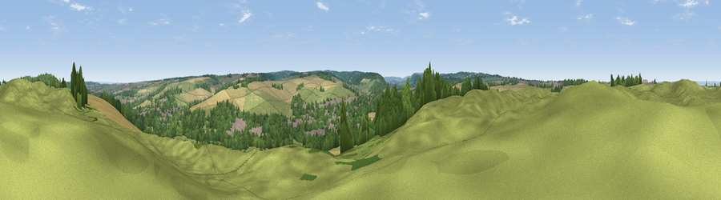

Viewpoint near Eynsford
#34411 in England · top 24% of its area beats it · near Eynsford · footpathWhere it is
The exact computed spot (TQ 53725 66425). Click the marker for map links.
Public access: a public right of way passes within 48 m of this spot. Computed from Natural England's CRoW access layer and OpenStreetMap rights of way — not the legal definitive map. Always verify locally.
The view, rendered

A 360° render of this exact spot computed from the terrain model, tree cover and land cover — summer colours, afternoon light, calibrated against photographs of famous viewpoints. Real trees, hedges and buildings will differ in detail.
The panorama
Grey silhouette: terrain skyline in each direction (720 bearings, Earth curvature and refraction included). Dashed green: skyline with trees (+15 m) and buildings (+8 m) as obstacles. Blue strip: how far the ground is visible on each bearing.
Where the view opens
Wedge length = distance to the farthest visible ground on that bearing (vegetation-aware). Rings at 10, 25 and 50 km.
What fills the view
46% grassland · 29% woodland · 20% cropland · 4% built-up
Angular shares of the visible panorama (visual magnitude), not map area. Landscape diversity 0.51 (0–1 Shannon).
Key numbers
More beautiful places nearby
The staircase of upgrades: each row has a higher view potential than everything closer. Driving times are estimates from straight-line distance, calibrated against real road routing — check an actual route before setting out.
| Place | Direction | Drive | Score |
|---|---|---|---|
| Farningham Wood | NNE · 1 km | ~4 min | 34.8 |
| Viewpoint near Farningham | NE · 2 km | ~5 min | 36.7 |
| Viewpoint near Farningham | E · 2 km | ~6 min | 39.1 |
| Viewpoint near Shoreham | S · 5 km | ~12 min | 40.2 |
| Viewpoint near Wrotham | SE · 9 km | ~17 min | 43.9 |
| Viewpoint near Wrotham | SE · 9 km | ~18 min | 53.6 |
| Viewpoint near Wrotham | SE · 10 km | ~20 min | 54.4 |
| Viewpoint near Trottiscliffe | ESE · 11 km | ~21 min | 60.3 |
51.37607, 0.20733 · source: screening · position refined by local search. Computed location — check access rights before visiting.